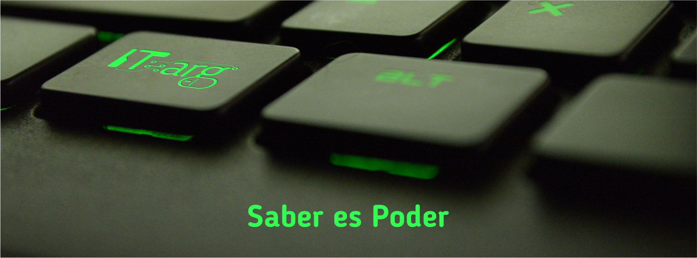

Entrevista Inicial
El primer paso para el ingreso a la comunidad de IT-arg está dado por
una entrevista personalizada con la dirección del Instituto a la que
cada aspirante accede, durante la misma se lo interioriza sobre la
filosofía, los objetivos, encuadre y forma de trabajo institucional. El
interesado plantea sus objetivos, evacúa sus dudas y en base a la
propuesta se le presenta la oferta de cursos disponibles acorde a su
nivel e intereses.
Planes de Estudio
Cada plan de estudios ha sido desarrollado por IT-arg con el objetivo de
capacitar a los alumnos en el desarrollo de roles y/o tareas
especificas. Para ello se evalúan las habilidades requeridas, los
conocimientos previos por parte del alumno que serán necesarios para
acceder a dicha capacitación. Luego se les listan las “Unidades
Temáticas”, se ponderan y ordenan de acuerdo a varios criterios, para
finalmente incluirlas en la curricular.
Los Planes de Estudio son construidos previendo las particularidades de
cada grupo, de esta forma los docentes cuentan con la flexibilidad
suficiente que les permitirá adecuar la profundidad con la que cada
“Unidad Temática” será abordada de acuerdo a las particularidades de
cada grupo.

Las Clases
Todas nuestras clases son por la plataforma ZOOM en vivo y
participativas, no son clases grabadas y se requiere tener la
aplicación, conexión a internet y la cámara prendida durante todo el
proceso. La frecuencia es una clase semanal con promedio de hora y
media.
Dinámica
El alumno estudia el material didáctico previo a la clase.
En la clase se realiza el abordaje de la unidad temática especifica
mediante diversas técnicas pedagógicas y de dinámica grupal.
Al finalizar los alumnos cuentan con los materiales (Videos, Guías,
Herramientas, etc.) que le permiten replicar las “Demostraciones
Didácticas” y “Prácticas Programas”.
Evaluacón
En IT-arg la evaluación es parte del proceso de aprendizaje. La
conformación de grupos pequeños y el seguiento clase a clase de cada
alumno, grupo y docente nos permiten el diagnostico temprano y la
adecuación de técnicas y estrategias a cada situación.
Certificación
Cada alumno recibe su certificado al finalizar la cursada y/o módulo
tras cumplir con los requerimientos específicos. Los Certificados son
enviado en formato digital y quedan publicados en nuestra Web para que
los mismos puedan ser validados. A su vez contamos con un mecanismo
automatizado para que todas las ertificaciones emitidas por IT-arg
puedan ser vinculadas a LinkedIn